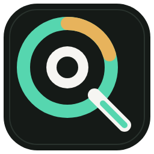

See what is left
Compare supported Codex and Claude readings in one place, with a clear label when a source has no recent data.

AIQD
v0.1.0 desktop preview
See remaining quota and reported reset times for Codex and Claude in one local dashboard. AIQD reads supported usage data already available on your device.
Windows x64 preview. Browser-only accounts are not supported, and some sources do not report a reset time.
Built for long AI coding days
See remaining quota, the last recorded time, and the next step when a local source needs attention. Reset times appear only when the source reports one.
Compare supported Codex and Claude readings in one place, with a clear label when a source has no recent data.
Use the dashboard for details, the tray panel for a quick check, or keep the optional widget nearby.
The desktop app stores quota readings on your device. It does not collect passwords or browser cookies, or upload prompts, replies, code, or chat content.
Desktop app privacy
Product screenshots
Know what the reading means
See the source and last recorded time.A refresh checks local files; a new quota reading appears only after the source records one.


Download
Download the installer from GitHub Releases, run it, then open AIQD from the desktop shortcut. Follow the first-run guide to connect the sources you use.
Windows x64 desktop preview. Use the release page for current download and verification details.
B50901B8AF4F9A07CAF9085143B229E3FC3FE76D63F3F600F1CDE6290DD5721C
Windows may show an unknown-publisher or SmartScreen warning.